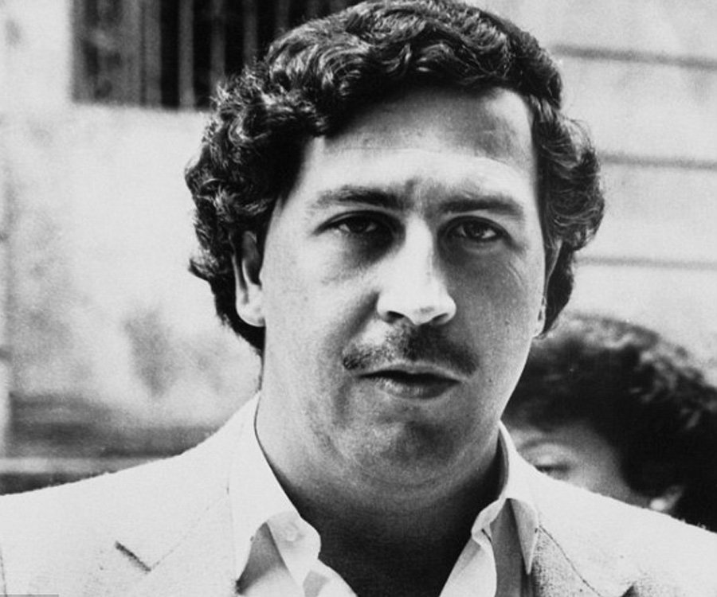

Pablo Escobar
Columbian Drug Lord - The King of Cocaine
Quick Facts of Escobar's Life
Who Was Pablo Escobar?
Pablo Emilio Escobar Gaviria was a Colombian drug trafficker who eventually controlled over 80 percent of the cocaine shipped to the U.S., earning him the rank of one of Forbes Magazine’s 10 wealthiest people in the world.
Early Life
Escobar was born on December 1, 1949, in the Colombian city of Rionegro, Antioquia. Escobar came from a modest family: His father worked as a peasant farmer while his mother was a school teacher. Escobar reportedly began his life of crime early, stealing tombstones and selling phony diplomas.
Escobar's Wife, Son and Daughter
In 1976, Escobar married 15-year-old Maria Victoria Henao. The couple had two children together: a son, Juan Pablo, and a daughter, Manuela.
Escobar's Death
Escobar’s family unsuccessfully sought asylum in Germany and eventually found refuge in a Bogota hotel. A firefight ensued and, as Escobar tried to escape across a series of rooftops, he and his bodyguard were shot and killed.
Visit here for more interesting facts of the Life of Pablo Escobar